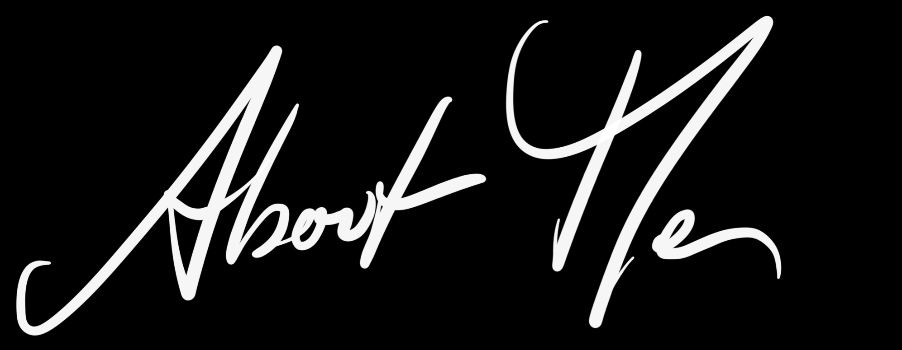

My Name is Clara beckers and I am an architecture student at the TU Delft. This online portfolio aims to give an overview of my interests
and skill in architectural and other design, that I have either studied or that I am interested in.
One of my fascinations is simplicity of design and the mechanisms of knowledge, engineering, crafts and other metiers
working behind the screen of that simplicity. Similarly to that, this online portfolio shows only the tip of the iceberg
of my interests and skiil and I would love to share the rest with you.
If you would like to know more about me and about my work experience, feel free to contact me personally or on Linkedin.